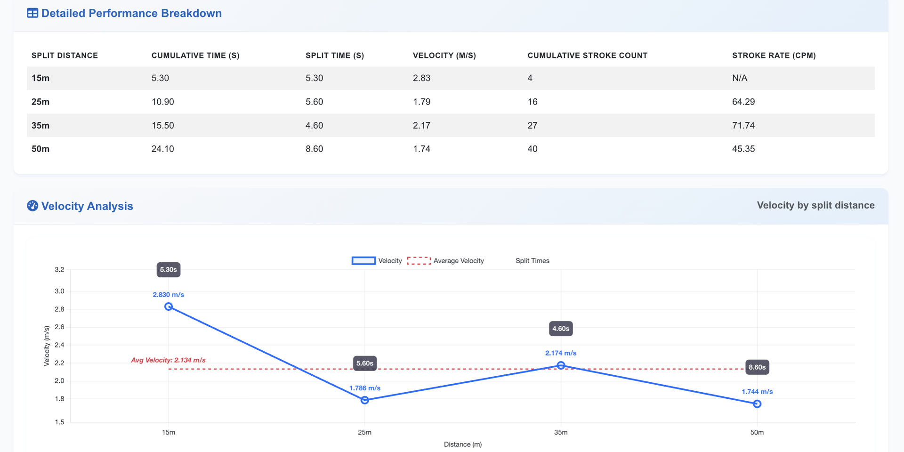

INTI International College Subang
Subang Jaya, Malaysia
American Degree Transfer Program, Applied Science
Completed before transferring to San Francisco State University.
Computer Science · Software Engineering
San Francisco State University
Now
I am studying Computer Science at San Francisco State and working as a Student Lead in Aquatics, with software engineering experience across systems, interfaces and physical operations.
The fullest example is cad-to-map, which turns a CAD site plan into a wayfinding map that runs with no network connection. Six kiosk sites were built from it, and its public repository carries 80 tests and 21 routing checks.
From a degree-transfer program in Malaysia to a Computer Science degree in San Francisco.
Subang Jaya, Malaysia
Completed before transferring to San Francisco State University.
San Francisco, California
Professional experience developing software systems and coordinating safety-critical facility operations.
Zengo Corporation · Malaysia
Developed an inventory application that automated stock calculations, and supported internal users and enterprise systems.
Inventory tracking · Support + troubleshooting
OSPIT Mobility · Technical / R&D · Malaysia
Researched and developed a highway digitalization ecosystem, alongside offline mapping, point-of-sale integration and mobile applications.
5 workstreams · Drawings 05.1–05.3
Project evidence → A-005
Mashouf Wellness Center · San Francisco, California
Protected patron safety through active surveillance, facility checks, and emergency readiness on the pool deck.
Lifeguarding · CPR · AED · First Aid
SFSU Campus Recreation · San Francisco, California
Coordinates student staff and daily aquatics operations while supporting facility management and enforcing safety standards.
Staff · Safety · Facility operations
Four things I do consistently, and the drawings where each one is on the record. This sheet is the claim; the next one is the evidence.
Each of these started with something fixed that I could not negotiate with. A kiosk with no network connection at runtime. A cloud point-of-sale that could not be modified. Several hundred devices whose codes were printed on cabinet labels and buried in saved procedures, so renaming them was rejected outright.
Ruling out a tile server forced the whole map, routing included, to ship as one self-contained file. Being unable to touch the point-of-sale is what turned a driver problem into a protocol one.
Asking a language model to be careful about accuracy did not hold, so it now only ever sees what a tool returned and cannot cite a number nobody gave it. Access rules live in the database rather than in the application that calls it. A work order from an unrecognised source stops rather than dispatching, and nothing is ever dispatched unattended.
Row-level security was harder to get right than the features it protects: a policy that queried the table it guarded recursed forever, and the fix was moving the lookup into a definer-rights function.
80 Python tests and 21 routing checks guard a converter running unattended at 6 sites. A separate 73 cover the sports assistant, every external call fixtured so the suite runs with no network at all. A throw-injection test raises deliberately at 12 points inside one function, because that is how a graph corruption was found: the snap step wrote a node into the shared graph before registering it for cleanup, and left it welded in at 10 of those 12 points.
I swim competitively, so I already knew which numbers mattered — and deciding what a race is actually made of took far longer than building the charts. Equipment identity split the same way: position and role are known at procurement, before a device physically exists, while its address and credentials only exist once it is commissioned, so no single system could own the whole record.
I work with coding agents daily, and design around what they get wrong — see 04.2, on putting the rule where it cannot be skipped.
Every drawing on the next sheet carries at least one of these.
A-005 Projects →Six entries. Select any to open its detail drawing. Client work is drawn rather than screenshotted.
Turns a CAD site plan into a self-contained interactive map with search, category filters and walking directions, working with no tile server and no network connection. Built to drive touchscreen wayfinding kiosks at highway rest stops, then generalised and published so it runs against anyone’s drawings.
![3D map viewer built by cad-to-map from a DXF site plan, showing the tool’s own demo site rather than client work. Extruded building volumes sit above marked parking bays threaded with directional arrows and pedestrian crossings. Category pins mark parking, toilets, food, fuel, prayer facilities, accessible routes, first aid, bicycles and electric-vehicle charging. A red “You Are Here” marker sits beside the buildings, and a red dotted line traces the walking route from it to a destination across the site.](assets/images/cad-to-map-viewer.jpg)
CAD site plans are the authoritative geometry for kiosk wayfinding, but real exports from a drafting office are broken in specific, repeatable ways: outlines that don’t close, labels sitting on the wrong layer or trapped inside hidden blocks, blocks nested inside other blocks, and facilities that are labeled on the plan but never actually drawn. A converter that assumes clean CAD fails differently on every one of these.
The kiosk has no network connection at runtime, so the whole map, routing included, had to ship as one self-contained file with no server and no tile fetches. That ruled out any framework or bundler beyond a build script that inlines everything ahead of time.
The pipeline walks the CAD file honouring the layer panel’s actual visibility, closes and repairs broken outlines, resolves nested blocks, then binds labels to structures in two passes, first by containment, then by a distance-and-size score. Where a facility is labeled but never drawn, a sibling structure of the same type is cloned to its label position and logged loudly as synthesised, never silently.
Routing runs Dijkstra over an undirected graph built by welding nearby path vertices onto a snap grid, with edges split for points that start or end off the network. The graph and the map geometry are inlined into a single HTML file at build time, so the kiosk needs nothing at runtime beyond a browser.
The snap step wrote a new node into the shared graph before registering it for cleanup, so an exception partway through could weld a bad node in permanently with nothing to signal it. A throw-injection test that deliberately raises at twelve points in that function caught it: before the fix it left the graph corrupted at ten of them, and the same test now guards against a regression.
Six kiosk sites were built from it, one with a complete handover package. The public repository carries 80 Python tests and 21 routing checks, and it also ships as an installable agent skill, so the same converter runs inside a coding agent as well as from the command line.
Almost none of the difficulty was in the conversion logic itself. Nearly all of it was in absorbing what real architectural drawings actually do in practice, which no file format specification tells you.
Researched and developed a highway digitalization ecosystem integrating roadside equipment, network monitoring, traffic operations and enterprise maintenance. Defined the operating workflows and system architecture, implemented the integration foundation, validated fault and maintenance processes, and developed a unified Asset Console.
Roadside equipment was distributed across multiple platforms that identified, monitored and operated the same physical devices differently — an enterprise maintenance register, a traffic control system, an IoT telemetry platform and a network monitor. Equipment records, network alarms, traffic events and maintenance activity could not be correlated reliably, producing duplicate identities, unactionable alarm volumes and fragmented operational workflows.
Analyzed live systems, source code, APIs, operational records and existing architecture documents to distinguish implemented capabilities from proposed designs. Identified gaps in equipment identity, network topology, maintenance data, credential management and system ownership.
Developed end-to-end process flows covering device registration, commissioning, monitoring, fault detection, human verification, work-order creation, repair and closure. Defined system responsibilities and designed the maintenance workflow to require human approval before dispatch.
Designed a layered architecture connecting roadside telemetry, network monitoring, traffic operations and enterprise maintenance. Developed an Asset Hub that correlates system-specific identifiers and synchronizes equipment records into one operational view of each physical device. Implemented field-ownership and device-lifecycle rules, idempotent synchronization, dry-run defaults and validation that rejects an incomplete read rather than treating it as complete.
Diagnosed identity and data-quality defects across live systems, including duplicate identifiers, incomplete API responses and conflicting device states. Identified that reconciliation never read activation status, so devices switched off in the control system still counted as live in the register. Added the missing comparison and implemented explicit failure states for partial or conflicting data.
Deployed identity and fault correlation to production. 386 of 391 roadside devices carry one identity across the register, the control system and the network monitor, with no conflicts, gaps or duplicate codes, and 248 monitoring outages reduce to 24 actionable findings. The report-to-repair workflow is validated in staging and the Asset Console reads live systems; neither is deployed. Counts verified August 2026.
Established explicit ownership across operational, monitoring and enterprise systems. Integration alone could not resolve conflicting identities, incomplete records or authority boundaries.
A cloud point-of-sale could only print to one manufacturer’s network printer. Rather than write a driver or tunnel a VPN, this service impersonates that printer: it presents the interface the point-of-sale already speaks, then forwards each job to whatever thermal printers the restaurant actually owns.
A cloud point-of-sale system could talk to exactly one printer protocol, a single manufacturer’s dialect, and a printer that didn’t speak it failed badly rather than cleanly: it printed raw markup as receipt text instead of an actual receipt. The printers already mounted on site were not going to be replaced to fix that.
The manufacturer’s own compatible printer box wasn’t available to this deployment, and upgrading wasn’t on the table. A custom server-side module was ruled out because the hosting platform’s own installer refuses that kind of code with no file access to the server, and a VPN tunnel was rejected too, since it meant managing encryption keys and an always-on connection for something this narrow.
The point-of-sale software already renders every receipt to a bitmap in the browser and posts it, unauthenticated, to whatever address is configured for its one supported printer. The service impersonates that printer: it takes the address, decodes the bitmap it receives, and forwards it to whichever real thermal printers the site actually has, routed by a path in the destination URL since the platform hardcodes one printer identity for every destination.
Because the point-of-sale never re-draws the receipt for this path, whatever comes out of a printer is the same bitmap the screen showed, so drift between what a cashier sees and what prints is designed out of the path rather than merely tested against. Each destination printer gets its own delivery queue, so one stuck printer can never block deliveries to a healthy one.
It ran production print traffic on the store’s own machine, confirmed on paper by a manager who added a printer and watched a job route live. One issue remains open rather than fixed: a connection-handling edge case that is mitigated for now rather than properly resolved.
Comparing printer models directly got me nowhere. Once I stopped treating the hardware as the problem and targeted the shared protocol instead, picking a printer became a purchasing decision, not an engineering one.
An assistant for someone new to a sport, who wants to know who a player is or why a result mattered and has no way to tell a real answer from an invented one. It answers only from real data and prints its sources. Built against Formula 1 timing data.
Getting into a sport means asking questions with obvious answers to everyone but you: who drives for which team, who is number 11, why that lap mattered. Ask a chatbot and you get a fluent answer that may be entirely invented, which is worse than no answer when you have no way to check it. The idea was an assistant a newcomer could actually check.
Fetch the numbers first, then let the model write only from what a tool returned. An agent mode lets it choose which data tools to call across several steps. It is built against Formula 1 timing data, and the shape is deliberately sport-agnostic: the model never touches the data source directly, so another sport is another set of tools rather than a rewrite.
73 tests, all offline, with every external call fixtured, so the suite runs anywhere without a network or an API key.
Prompting the model to be careful did not hold. Only the structure did — it cannot cite a number it was never handed.
Python · OpenAI function calling · Typer · Jolpica-F1 · FastF1 · pytest
Meeting software where preparation, minutes and archive are one flow. Teams submit before the meeting, an admin reviews and records it, minutes are generated against a template, and everything is exported and kept searchable afterwards.
![Quorum’s admin console, running, with links to meeting history and a member view. A “Record the meeting” panel selects a microphone and starts a recording, noting that an in-person meeting is captured from the mic while an online call is imported instead. Below it the “Meeting content” panel holds a pre-meeting submission, marked “Saved” and flagged as editable only by this admin: a Markdown pane on the left and its rendered preview on the right, both showing the same agenda headings. A submission status row at the foot is switched to “Submitted”.](assets/images/quorum-pre-meeting-submission.png)
A company running recurring team meetings has its preparation scattered before and its notes scattered after. Each team keeps its own notes somewhere, the minutes are written from memory by whoever remembers to, and a month later nobody can find what was agreed.
One flow across three cooperating pieces: a web app where teams submit ahead and an admin reviews, records and presents; a local engine that turns the recording and the submitted notes into minutes against a chosen template; and an optional desktop recorder. Meeting status is derived from what has actually happened, never set by hand: collecting, recorded, draft, published.
The AI generation is opt-in and runs locally. The web app health-checks a bridge on the local machine; if it is not running, generation is disabled with a message that says so, and the entire structured flow still works. The model is an enhancement to the product, not a dependency of it.
Two row-level security failures, both fixed with definer-rights functions. The admin check queries the profiles table, and the policy guarding profiles calls the admin check, so without definer rights it recursed forever. Separately the signup trigger needed its search path pinned, or creating an account failed outright with a database error that said nothing useful about why.
Eight pages and no framework, with the pure helpers split out and unit tested.
Getting row-level security right was harder than building the features it protects. A policy that queried the same table it guarded recursed forever, and the fix was to move the lookup into a definer-rights function.
JavaScript · Supabase · PostgreSQL · row-level security · Python
Swim analysis without a subscription or a sensor rig. It works from the numbers any swimmer can record at the pool, and turns them into the few that show whether a race went well.

Swim analysis tools want a subscription and a level of detail most swimmers cannot easily produce: sensors, stroke telemetry, somebody entering all of it. I swim, so I knew which numbers actually matter and which ones anyone can get with a stopwatch and a lane. The question was how much useful insight you can reach from only the easily measurable ones.
The only numbers it needs are the times at 15m, 25m, 35m and 50m. Every 50m pool already marks those — the 15m line at each end and the midpoint — so anyone on the side can capture them with a stopwatch. No sensors, no telemetry, nobody entering data a swimmer cannot produce. From those four times it derives each split and the velocity between marks, and compares a swim against a target pace and against previous swims. Stroke rate needs a stroke count entered alongside them.
Deployed and running, with a recorded demo. I use it on my own swims.
I swim the sport, so I already knew which numbers mattered, and that turned out to be most of the design work. Deciding what a race is actually made of took far longer than building the charts.
Flask · SQLite · Bootstrap · Chart.js · Python